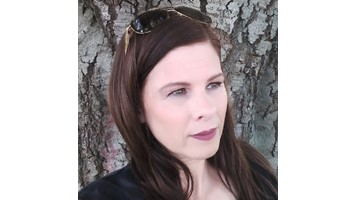
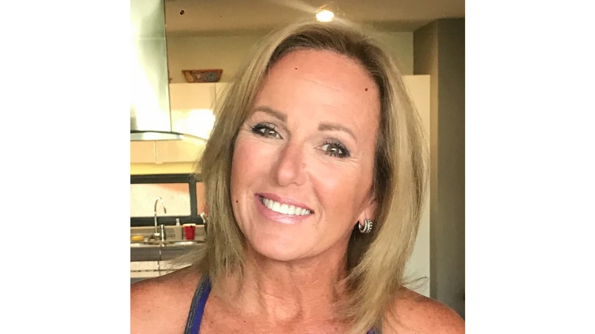
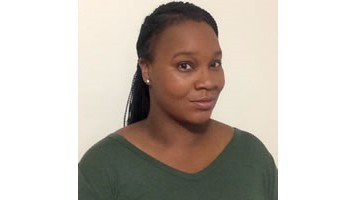
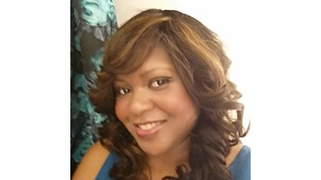

Canrisk

Bienvenido a Canrisk. Somos una plataforma dedicada a brindar herramientas de prevención, soporte emocional y asistencia para jóvenes y familias enfrentando procesos oncológicos.
Conocer Tipos de Cáncer →Para apoyar a alguien con cáncer, la clave es la presencia auténtica y evitar el positivismo forzado que invalida sus miedos. Escucha activamente sin juzgar, permitiendo que la persona exprese su tristeza o enojo de forma segura. En lugar de preguntar "¿en qué ayudo?", ofrece acciones concretas como llevar comida, limpiar o hacer recados específicos.

Respeta siempre su autonomía, tratándola como la persona que es y no solo como un paciente bajo tratamiento. Evita dar consejos médicos no solicitados o contar historias de otros casos que generen presión innecesaria. El silencio acompañado suele ser más reconfortante que las frases hechas o los discursos motivacionales
En este apartado encontrarás diferentes testimonios de guerreros que vencieron el cáncer.
Nunca pierdas la esperanza.

En el caso que necesite volver a pelear, tengo los guantes ahí guardaditos.
Soy Ana María, sobreviviente de cáncer de pulmón categoría 4 y llevo 6 meses libre de cáncer.
Con mi yerno, que es oncólogo, de la cual por momentos era positivo tener un yerno médico que entendiera del tema, pero en otros momentos no era positivo.
A mí nada lo que es negativo me sirve. Y como todo era negativo, en un momento dado tuve que sentarme con él y explicarle de que yo no funciono con cosas negativas, sus porcentajes y sus estadísticas. A mí no me sirven porque yo no me manejo con este tipo de cosas. Una vez que le expliqué que a mí eso me hacía mal y que no me sirve, que por suerte pudo entender que le costó.
Una gran ayuda el mantenerse uno positivo y rodearse de gente y de cosas. Si uno puede confrontar la enfermedad, puede confrontar a una persona o varias que sean negativas.

Hace aproximadamente 4 años, Juan Luis Tintaya tenía molestias en la lengua. Le salían llagas y le ardía. Él esperaba que estos síntomas se fueran, pero no ocurrió así y, a los dos meses, acudió al médico. El experto en cabeza y cuello le mandó a hacer una biopsia para descartar la posibilidad de una neoplasia maligna.
El resultado fue positivo para cáncer de lengua, piso de boca y ganglios. En ese entonces Juan Luis tenía 41 años y trabajaba bastante. Sin embargo, esta noticia, le dio una pausa a su vida laboral y se ocupó de su salud. Se operó y luego pasó por quimioterapia y radiación.
Su experiencia con el tratamiento de cáncer duró 3 meses. Fue corta, pero intensa. Se logró extirpar la parte afectada y se le retiraron los ganglios. Tuvo 33 sesiones de radiación y le dieron tres dosis fuertes de quimioterapia. Después de eso estuvo bien.

A Félix Salomon le dio cáncer de próstata en el año 2009, cuando tenía 61 años. Lamentablemente, pasó por la experiencia de una mala praxis y después de eso llegó a otro hospital, ahí le realizaron los exámenes respectivos y se sometió a otra operación.
Después de esa operación, el señor Salomón siguió sus controles médicos y, gracias a esa buena costumbre le detectaron tempranamente una reactivación del cáncer, en el 2012. Pasó por 36 sesiones de radioterapia y actualmente se controla una vez al año.

Hace 9 años, Felipe Yanes se enteró de que tenía cáncer de próstata, gracias a los chequeos médicos de rutina que él acostumbraba realizarse. Su gran sentido del humor y su mirada positiva de la vida jugaron a su favor durante todo el tratamiento de la enfermedad.
Este es su testimonio como paciente de cáncer: “Cuando me hicieron la biopsia, según mi estilo, les dije a los médicos: Si es bingo, anotamos el número, porque tiene que ser premiado. Ellos se rieron. Y, efectivamente, era cáncer. No me deprimí, confié en los médicos y me sometí a la operación que me indicaron”.
Yanes no tuvo necesidad de hacer quimioterapia o radioterapia, en su caso bastó la operación. Después ha seguido los controles periódicos muy ordenadamente y aconseja a todos que hagan lo mismo, pues así se puede encontrar un cáncer en sus inicios.

Antes de recibir mi diagnóstico de cáncer, mi salud siempre estuvo muy bien. No tuve ningún problema grave y mi ciclo menstrual era normal.
Luego, en noviembre del 2011 tuve un sangrado vaginal significativo por alrededor de una semana, seguido de ausencia total del periodo en el mes siguiente, lo cual no era normal para mí.
Con el paso del tiempo y cob el tratamiento aprendí a tratarme mejor. Escucho a mi cuerpo. Cuando estoy cansada, descanso. Cuando estoy triste, lloro. Cuando estoy feliz, río. Todavía sigo conociendo mi "nuevo" cuerpo. Algunas veces, funciona bien, otras no. Pero estoy viva y estoy bien, ¡y estoy rodeada por aquellos que más amo!

Fue alrededor de Navidad que fui a hacerme una de mis pruebas de detección de rutina. No le di importancia porque era solo una cita médica de rutina, como tantas otras anteriores. Pero nunca olvidaré la llamada del médico que recibí después: la prueba de Papanicoláu había dado anormal y había células precancerosas en la muestra que me tomaron.
Decidí someterme a un procedimiento para sacar las células. Recuerdo estar descansando en casa durante mi recuperación y sentirme muy agradecida por esa cita médica. De no haberla tenido, el futuro podría haber sido muy distinto para mí.
La gente escucha la palabra "cáncer" y se pregunta, "¿Lo sobreviviré? ¿Tendré que vivir siempre con esto?". Pero sé que ese no tiene que ser siempre el caso. Podemos encontrar estos problemas al inicio, prevenir el cáncer antes de que comience y luego recuperarnos y alcanzar nuestro máximo potencial en la vida.

En septiembre del 2015, estaba completando mis estudios en la Squadron Officer School cuando noté un bulto en mi vulva un día cuando salía de la ducha. No le puse mucha atención al comienzo porque pensé que me lo podía haber causado durante el entrenamiento.
Como la masa era de unos 6 cm, decidimos realizar una operación ambulatoria y enviarla a patología. Me hicieron la operación el 2 de febrero del 2016 y 2 semanas después tuve una cita de seguimiento para asegurarnos de que estaba sanando bien, resultó ser que los márgenes dieron resultados positivos para sarcoma de la vulva y me remitieron a un especialista.
Cuando cuento mi historia, mi mensaje para otras mujeres es que ustedes conocen su cuerpo mejor que nadie. Si hay cualquier cambio que no puedan entender, háganse un chequeo. Creo firmemente que el diagnóstico temprano me salvó la vida.

En marzo del 2013, comencé a tener un poco de hinchazón abdominal y a aumentar de peso sin explicación. Fui a un par de médicos. Me hicieron una radiografía y una EGD.
Busqué a un gastroenterólogo que de inmediato palpó mi estómago y ordenó una tomografía computarizada. Me llamó de vuelta a su consultorio y me dijo: "Tiene cáncer de ovario". Quedé atónita y me puse histérica. Tengo la bendición de que mi tía sea enfermera oncológica. Ella llamó a un oncólogo que me puso en las manos de uno de los mejores ginecólogos oncólogos del país. Él me hizo una histerectomía radical y, siguiendo su recomendación, me sometí a seis rondas de quimioterapia.
Terminé el tratamiento en noviembre del 2013.

En agosto del 2007, comencé a tener un sangrado abundante y acudí a un centro de salud cercano. Los médicos encontraron algo sospechoso en mi útero. Me remitieron a un ginecólogo para que me hiciera una biopsia, la cual reveló que tenía cáncer. Luego me remitieron a un ginecólogo oncólogo y al hacerme una biopsia adicional en el cuello uterino, descubrió también células cancerosas. A la fecha, los médicos no saben con seguridad si el cáncer de útero apareció antes del cáncer de cuello uterino o viceversa.
Me hicieron radioterapia y quimioterapia. Tuve la suerte de no sufrir efectos secundarios por el tratamiento. Después de la radiación y la quimioterapia, me hicieron una histerectomía completa y me sacaron los ovarios. Ahora no tengo cáncer.
Hoy en día, el cáncer ya no es una sentencia de muerte. No piensen que no tienen cáncer solo porque creen que no pueden pagar por la consulta para el diagnóstico y el tratamiento que necesiten.

En el 2016, me di cuenta de que me estaba cansando más; pensé que era por los viajes. Decidí ir al médico para hacerme un chequeo. Le hablé sobre hacerme una colonoscopia, aunque no había tenido ningún síntoma, además de sentirme cansado. Quería hacerme una prueba de detección porque habían pasado 7 años desde mi última colonoscopia. Además, mi padre tuvo cáncer de colon cuando tenía solamente 45 años y sobrevivió. Hoy en día mi padre tiene 75 años y su salud es relativamente buena.
Me hice la colonoscopia el 10 de enero del 2017 y el médico tomó muestras de tejido para realizar una biopsia. Una semana más tarde, llegaron los resultados y mostraron que sí tenía cáncer de colon. El 2 de febrero del 2017, me operaron para extirpar el cáncer.
Afortunadamente, debido a que el cáncer fue hallado lo suficientemente temprano, la operación fue exitosa. Pero nunca lo hubieran encontrado de forma temprana si yo no me hubiera hecho la prueba de detección.